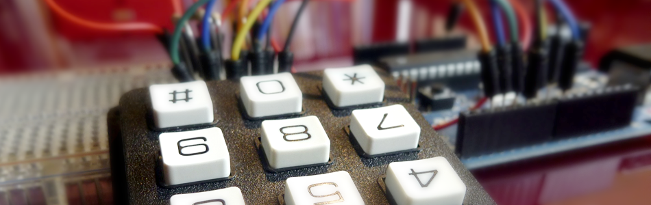
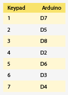

What's the password? Arduino + Keypad

Keypads are everywhere; on your cellphone, on your TV remotes, on your stereo and now on your Arduino. Wait.... Why do you want a keypad on your Arduino? Well it’s a pretty useful device to input numbers and letters (example: telephones), it can also be used for security measures like a keypad door lock, and it's prefect when you need a low-cost and accessible interface for your next idea. After all, It wouldn’t be practical to use a single button or a potentiometer to input your Pin on an ATM. So for this tutorial, we will be going over Sparkfun’s 12 buttons keypad (0-9, #, * ), and get you all set up with some code and schematic too.
The buttons on this particular keypad are setup in a 3X4 matrix format so we only need 7 pins to detect the pressing of 12 keys. For example, when you hit the number 3 pins 5&2 are connected, 6 connects pins 5&7 and 9 connects 5&6. So in code we just look for the combination and we know what button is being pressed. So in simple terms, if pins 5 and 2 (of the keypad) are signaling the arduino, it means that button 3 has been pressed - It is setup like this to minimize the number of pins needed to control the keypad.
Hooking it up
So this wiring example looks really confusing, but it's not. Make sure to look at the full screen version for help, but basically what you have here is that pins 3,5,6 & 7 all all connected through a resistor to 5v as well as a digital pin on the Arduino. The resistors can range from 1K to 10K ohm (I'm using 10k) but can not be omitted. After, connect the pins as shown in the diagram. For those of you that are better with words than pictures, I made you a chart.
{kind=link}
Code
For this tutorial we have 2 Arduino projects. The first example is pretty simple and just prints out the key that you press in the Arduino Software's Serial Terminal. The second is just a little more complicated, and allows you to set up a 4 digit secret code. Both of these projects are significantly simplified because the Keypad and Password libraries are doing all the hard work for us.
To make this code work, before you load the code, or even open the Arduino program, we need to place both the "Keypad" AND "Password" folders into your Arduino Library. If you don't know where that is by default, Look to the right.
Download
If you click the download button to the right of "Arduino" you can download the whole thing as a zip, so you dont need to copy all the files.
{kind=link}
Default Library Folder Location
On your Mac:: In (home directory)/Documents/Arduino/libraries
On your PC:: My Documents -> Arduino -> libraries
On your Linux box:: (home directory)/sketchbook/libraries
Note On The Keypad Library
The beauty of this library is the modularity. It can adapt to any keypad, you just need to map the pins with an ohm meter. Once you know which pin is which, simply change the keypad setup code to suit your configuration, and you are good to go. This means you can really interface with any keypad you can get a hold of.
Extending This
This is a basic tutorial, but you could build much more complicated projects with it.
Maybe you could add a passcode to your fancy new coil-gun so that your roommate doesn't accidentally (insert something bad here). Use it as an input for your large electro-mechanical calculator. Or connect it to 12 different rock launchers so can easily fire them at will. And Yes... if you really must, im sure you could control some LEDs with it.
Article taken from bildr.org with minor changes - I am the original author of this content